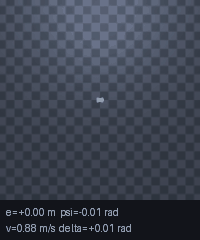
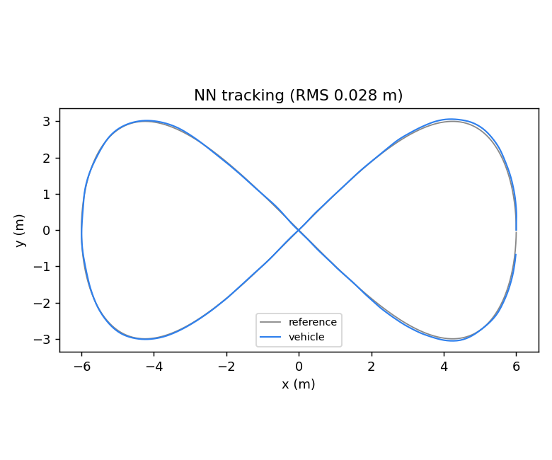
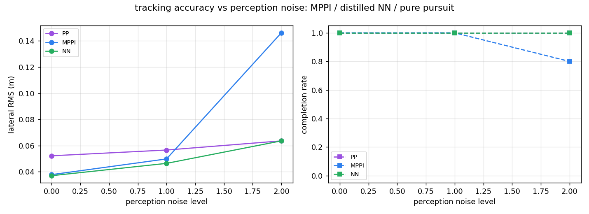
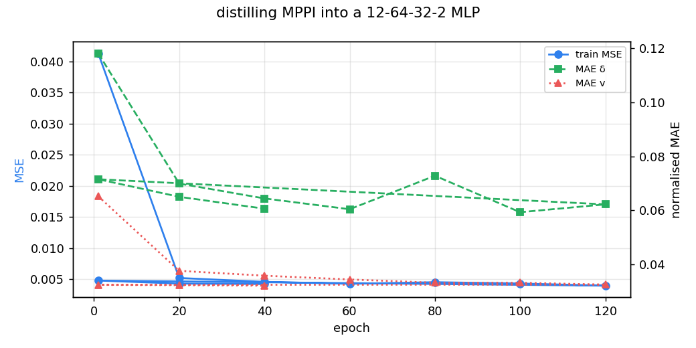

MPPI 采样 MPC 与蒸馏神经网络：8 字赛道轨迹跟踪
本示例对应课程任务 (2)「实现传感器感知及运动控制」与「同样算法不同实现的对比」：
同一台 MuJoCo 阿克曼小车，在同一条 8 字赛道上，用同一个带噪的感知输入， 比较 MPPI 采样 MPC、从 MPPI 蒸馏出来的神经网络、以及纯追踪基线的 跟踪精度、计算量与抗噪能力。

1. 与已有模块的区别
| 已合并模块 | 做了什么 | 本模块的差异 |
|---|---|---|
lateral_control_benchmark |
纯追踪 / Stanley / LQR 三种几何-最优控制算法对比 | 没有 MPC，也没有神经网络；用运动学模型直接积分 |
ros2_pure_pursuit |
纯追踪跟踪路径 | 单控制器，无对比 |
ros2_astar_planner |
栅格全局规划 | 只规划，不跟踪 |
| 本模块 | MuJoCo 物理闭环，MPPI + 蒸馏网络 + 纯追踪，含感知噪声扫描 | 补上"MPC 类"和"学习类"两条空白，并给出算力/精度/鲁棒性三角关系 |
2. 仿真环境
2.1 赛道
8 字用 Gerono 双纽线（半宽 m）：
参考线离散成 600 个点（总长 36.58 m，平均间距 6.10 cm，因曲率不同在 4.2～8.9 cm 之间波动）， 沿法向左右各放一圈锥桶，车道半宽 m：
锥桶半径 0.09 m。摆得密（每 6 cm 一个）是为了让雷达看到的是"连续护栏"而不是稀疏点。
2.2 车辆动力学
车体是带 freejoint 的刚体，控制量是 。运动学约束用速度伺服实现：
期望偏航率
纵向力把车速拉到 ，偏航力矩把角速度拉到 ，侧向强阻尼模拟轮胎不侧滑：
实测： m/s 跑 2 s 位移 1.84 m； 跑 1 s 航向变化 0.95 rad， 与 的解析值一致（实测偏差 < 0.12 rad，单测容差同值）。
2.3 雷达（感知）
32 条射线均匀覆盖 ，量程 6 m。锥桶是已知半径的圆柱，射线-圆柱解析求交：
其中 是锥桶相对车的位移。这里没有逐个调 mj_ray：射线与 1200 个锥桶的求交
用 numpy 一次算完（约 0.3 ms/帧）。单元测试 test_lidar_min_matches_bruteforce 用逐锥桶暴力解
交叉验证，误差 < m。
由雷达测距反推横向误差：把前方 ±51° 的射线分成左右两组，取各自最近距离
车偏左时右侧更远、，与真值符号一致（单测 test_lidar_estimates_lateral_error，误差 < 0.35 m）。
2.4 状态估计
控制器拿不到真值。位姿估计来自：
- 里程计航迹推算：， 由相邻两帧位姿增量算出，再叠加 噪声（只有噪声，没有偏置）；
- 雷达横向修正：把估计位姿沿参考线法向拉回
这是只有一维观测的轻量融合，好处是感知噪声真的会传进控制器——第 6 节正是在扫这个噪声。
观测模型说明（重要）：§6.1 / §6.2 的表格为了让「控制器本身」可比，横向观测用的是 真值横向误差 + 高斯噪声（oracle 噪声模型，）， 而不是雷达估计；
lane_errors_from_lidar()只在 ROS 节点与专家采样里使用。 好处是把「控制器差异」与「感知精度」解耦，代价是表格里的数字不代表纯雷达闭环的性能： 实测把评测换成纯雷达估计时，三种控制器的 RMS 都会升到 0.5 m 量级（8 字交叉点处另一条支路的 锥桶会混进视野，需要额外的野值门限），这条限制写在 §9。
3. 三个控制器
3.1 MPPI（采样 MPC）
每个控制周期采样 条控制序列，噪声在时间上相关（否则轨迹是锯齿）：
用运动学自行车模型推演 步（1.25 s）：
代价是横向误差、航向误差、速度误差与控制平滑之和：
指数加权平均得到控制量：
参数：，， m/s。
3.2 蒸馏网络
把 MPPI 当成"会算但太慢的专家"，训练一个 12→64→32→2 的 MLP 模仿它。
输入 12 维（全部可测量）：当前横向误差 、航向误差 、车速 、上一拍 、 前方 1/2/3 m 处的三个横向误差、其中两个前视点的航向误差、速度误差、以及一个预留位。
输出经过有界激活：
损失与梯度（手写反向传播，Adam，）：
训练分两步：先纯模仿（120 轮），再做一轮 DAgger（让网络自己开 400 步，在它访问到的状态上问 MPPI）， 把新样本按 2 倍权重混进去再训 40 轮（专家数据共 1898 条：3 个 MPPI 回合）。DAgger 是必要的：纯模仿时网络会开到训练分布之外， 实测纯模仿版本跑半圈就偏离车道。
3.3 纯追踪（基线）
几何方法：沿参考线取前视点 ，曲率
4. 算法流程
每个控制周期（20 Hz）：
1. 雷达 32 线扫描 → 左右最近锥桶距离 → 横向误差 e_meas（可加噪）
2. 里程计推算 + 雷达修正 → 估计位姿 (x, y, θ)
3. 三选一：
pp : 前视点 → δ
mppi : 采样 512×25 → 按代价指数加权 → (v, δ)
nn : 12 维特征 → MLP → (v, δ)
4. env.step(v, δ)：速度伺服推进 MuJoCo 5 ms × 10
5. 记录真值横向误差（仅用于评价）、进度、耗时
5. 源码解析
| 文件 | 关键函数 | 说明 |
|---|---|---|
mppi_nn/track.py |
ref_point / cone_positions / track_errors |
双纽线几何、锥桶生成、误差符号约定 |
mppi_nn/env.py |
AckermannEnv.step |
速度伺服 + 偏航力矩 + 侧向阻尼 |
scan |
向量化射线-圆柱求交 | |
lane_errors_from_lidar |
左右最近锥桶 → 横向误差 | |
odom |
由相邻位姿增量算编码器/陀螺读数 | |
mppi_nn/mppi.py |
MPPIController.act |
采样、推演、代价、加权、滚动 |
pure_pursuit |
几何基线 | |
mppi_nn/net.py |
build_features |
12 维特征（训练/部署共用） |
forward/backward/step |
手写前向、反向、Adam | |
mppi_nn/nav.py |
PoseEstimator |
里程计 + 雷达修正 |
run_episode |
闭环主循环与指标 | |
collect_expert |
用 MPPI 采样专家数据 | |
mppi_nn/train.py |
train / dagger / save_gif |
训练、DAgger、动图 |
mppi_nn/sweep.py |
sweep / aggregate |
控制器 × 噪声 × 种子 |
mppi_nn/node.py |
TrackerNode |
ROS 2 话题与 TF |
6. 实验结果
python main.py --demo（CPU，约 3 min，含 5 个种子的噪声扫描）。环境：Windows 11 + Python 3.10，
mujoco.__version__ 实测为 3.17.0、numpy 2.2.6（课程虚拟机是 mujoco 3.1.6 / numpy 1.24）；
课程虚拟机（Ubuntu 20.04 + Humble + mujoco 3.1.6 / numpy 1.24）上 colcon build、pytest、ros2 launch 均通过。
6.1 三个控制器（噪声 = 0）
| 控制器 | 横向 RMS | 最大误差 | 完成一圈 | 步数（20 Hz） | 单步耗时 | 参数量 |
|---|---|---|---|---|---|---|
| 纯追踪 | 0.046 m | 0.096 m | 是 | 807 | 0.05 ms | 0 |
| MPPI | 0.029 m | 0.066 m | 是 | 828 | 11.42 ms | 512×25 次推演 |
| 蒸馏网络 | 0.028 m | 0.075 m | 是 | 834 | 0.12 ms | 2 978 |
网络精度追平 MPPI（0.028 vs 0.029 m），单步耗时只有它的约 1/60～1/95（比值随机器与 numpy/线程配置变化：作者机器 11.4 / 0.12 ms ≈ 1/95，评审机器 7.69 / 0.12 ms ≈ 1/64；表中的 ms 均为本机实测，不参与任何断言）。 纯追踪是几何解法，稳态误差最大——因为它不看未来曲率，8 字交叉点处会出现明显切内。

跨版本稳定性
同一份 models/policy.npz 在宿主 mujoco 3.17.0 与课程虚拟机 3.1.6 上给出的
RMS 都是 0.028 m（权重只依赖观测特征，不依赖动力学常量）；因此
test_committed_weights_reproduce_doc_numbers 的阈值取 0.045 m，
在不同 mujoco 主版本之间留有漂移余量，但仍能挡住权重错版（0.051 m）。
6.2 感知噪声扫描
横向测量噪声 m：
每个格子是 5 个种子的均值（括号里是最差种子）：
| 控制器 | level 0 | level 1 | level 2 |
|---|---|---|---|
| 纯追踪 RMS | 0.052 m（0.069） | 0.057 m（0.074） | 0.064 m（0.084） |
| MPPI RMS | 0.038 m（0.047） | 0.050 m（0.058） | 0.146 m（0.429，5 次里 4 次完成） |
| 网络 RMS | 0.037 m（0.047） | 0.046 m（0.053） | 0.064 m（0.067，全部完成） |

这张表是本次实验最意外的结论：MPPI 先掉队（5 个种子里有 1 次在 level 2 直接跑出赛道， 均值 0.146 m、未完成；网络 5/5 完成、均值 0.064 m）。原因很直接——它每一步都拿当前估计位姿 重新采样优化，噪声直接进入代价函数，加权平均出来的控制量跟着抖；而噪声大到 0.24 m 时， 估计位姿的抖动已经超过车道宽度的一半，采出来的最优解来回横跳，车就冲出去了。
蒸馏网络反而稳：它学的是"位姿偏差 → 控制量"的平滑映射，训练数据里的专家轨迹本身是平滑的， 网络输出天然有低通效果（实测没有失控）。当然这也有代价——网络没有在线优化能力， 场景变了（比如车道宽度改了）它不会自适应，而 MPPI 只要改参考线就能用。
6.3 训练

DAgger 前后对比：纯模仿版本跑半圈就偏离车道；加一轮 DAgger（400 条，2 倍权重）后闭环 RMS 从 0.051 m 降到 0.028 m。
7. ROS 2（Humble）
colcon build --packages-select mujoco_mppi_neural_tracker
source install/setup.bash
ros2 launch mujoco_mppi_neural_tracker main.launch.py # 默认 nn
ros2 launch mujoco_mppi_neural_tracker main.launch.py controller:=mppi # 切 MPPI
| 话题 | 类型 | frame_id | 说明 |
|---|---|---|---|
/car/scan |
sensor_msgs/LaserScan |
laser |
32 线，angle_min=-π、angle_max=π-inc、带 stamp/scan_time |
/car/odom |
nav_msgs/Odometry |
map→base_link |
编码器 + 陀螺（带噪） |
/car/cmd |
geometry_msgs/Twist |
— | linear.x=v、angular.z=v tanδ / L |
/car/steering |
std_msgs/Float32 |
— | 前轮转角 |
/car/status |
std_msgs/String |
— | ctrl/step/progress/e/cmd |
/tf |
tf2_msgs/TFMessage |
— | map→base_link、base_link→laser |
8. 复现与常见问题
| 现象 | 原因 | 处理 |
|---|---|---|
ModuleNotFoundError: mujoco |
虚拟机默认没装 | python3 -m pip install mujoco>=3.1，或按 README 离线装 wheel |
| MPPI 一步要十几毫秒 | 512×25 次推演，纯 numpy | 正常；要更快就调小 samples/horizon |
| 网络跑出去 | 只做了模仿、没做 DAgger | 跑完整 --demo（含 DAgger 一轮） |
| 结果与文档不完全一致 | mujoco 版本不同，积分器细节有差异 | 以同一环境内的相对差异为准 |
9. 局限性
- 运动学模型不含轮胎侧偏与载荷转移，高速（> 2 m/s）下与真实车辆差距会变大。
- MPPI 用的是简化模型做推演，没有用 MuJoCo 内部状态，因此不能处理"推演模型与真实动力学不一致"的情况。
- 网络只在 8 字赛道 + 一种车速上训练过，换赛道需要重新采样专家（流程是脚本化的，
collect_expert直接可复用）。 - 感知只有雷达测距，没有用相机；横向误差的估计依赖"左右锥桶对称"这一先验。
- 第 6 节的表格用 oracle 噪声观测（真值横向误差 + 噪声），纯雷达估计闭环下的精度会明显下降 （8 字交叉点处另一条支路的锥桶会进入视野，需要额外的野值门限），这一点没有做成完整基准。
10. 大模型使用声明
本模块代码与文档在 OpenHUTB 课程任务要求下使用大模型辅助编写，作者已逐行审查，
并在 Ubuntu 20.04 + ROS 2 Humble 虚拟机中实际运行验证（colcon build、26 项单元测试、
ros2 launch 与话题数据），对提交内容负全部责任。